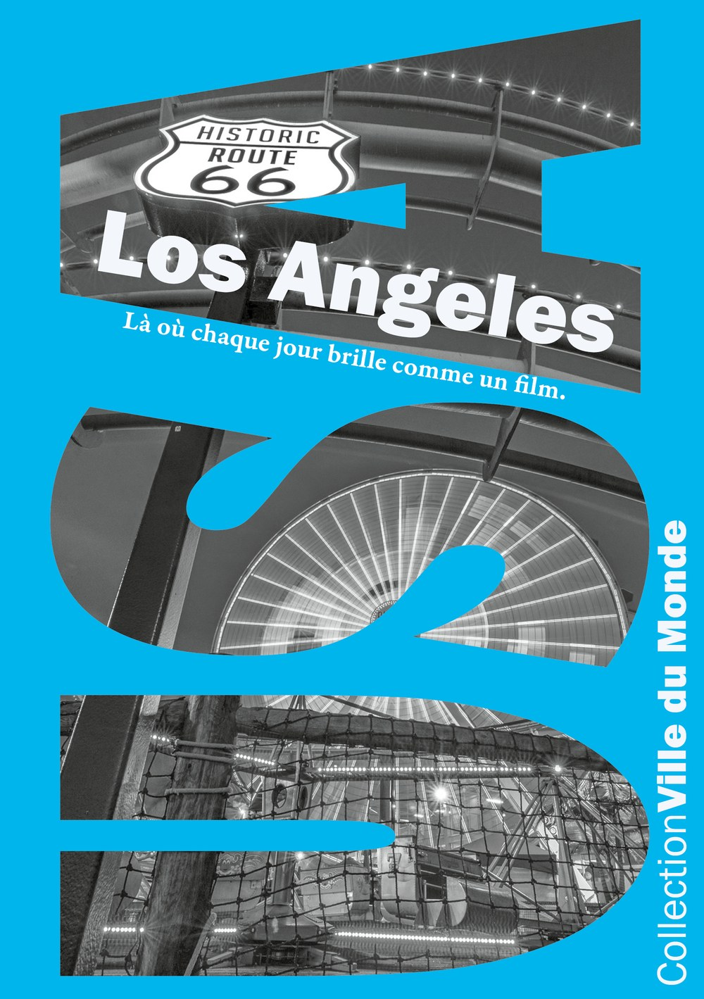
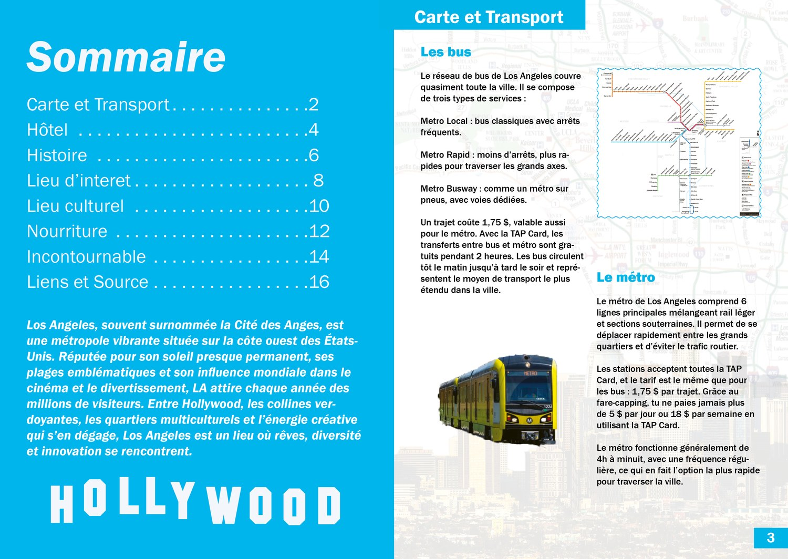
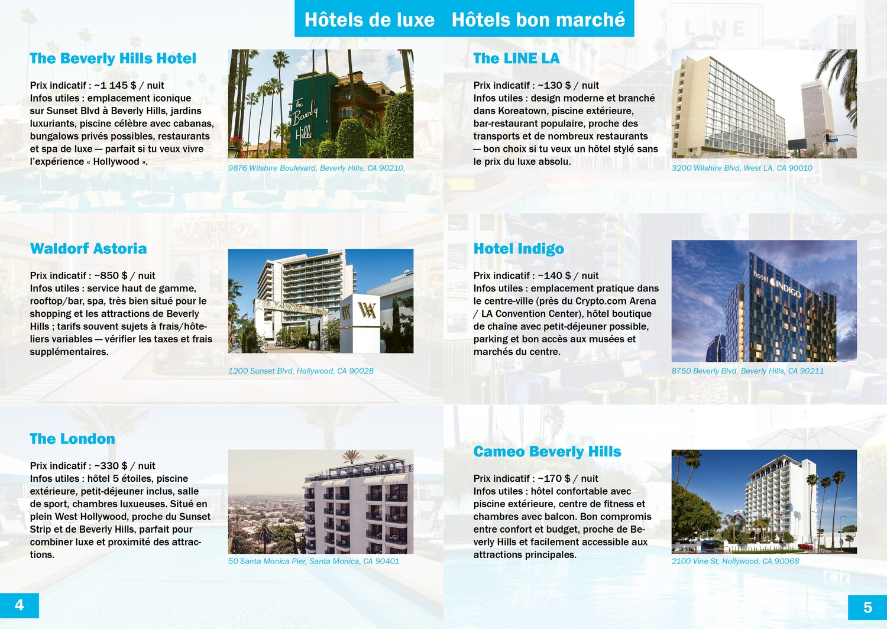
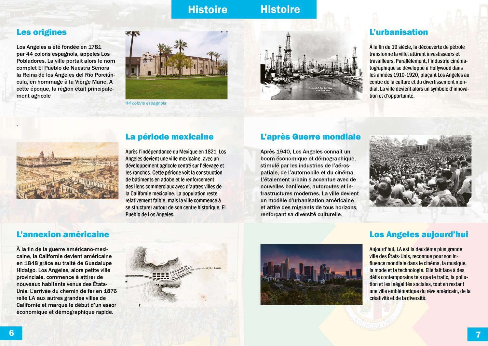
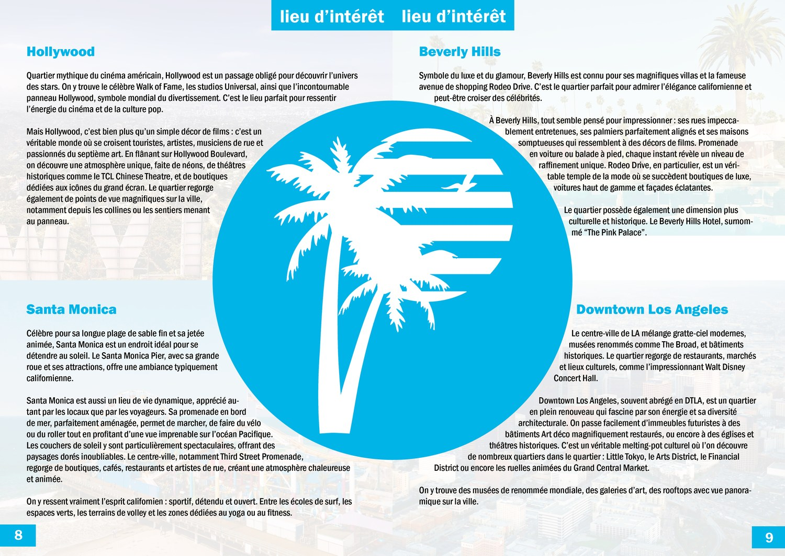
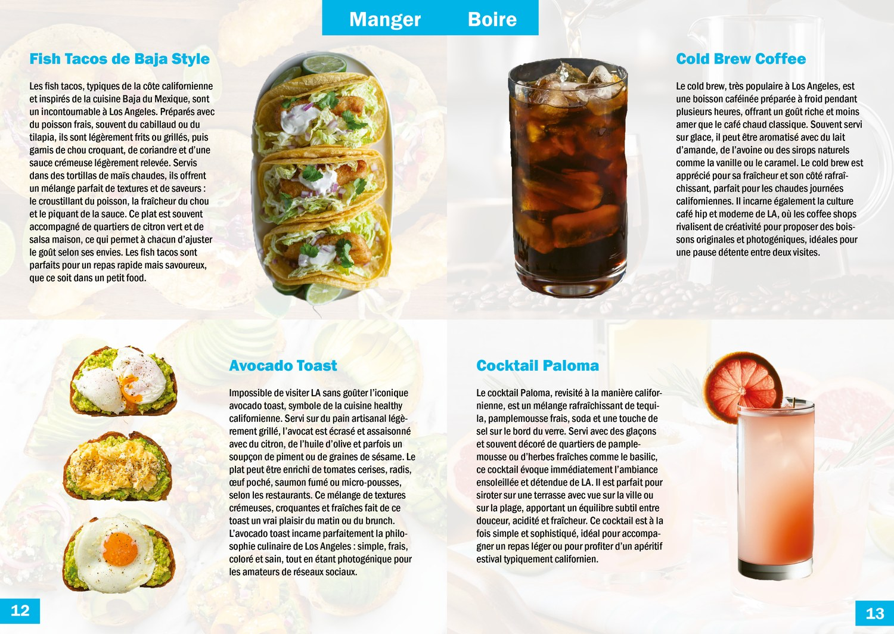
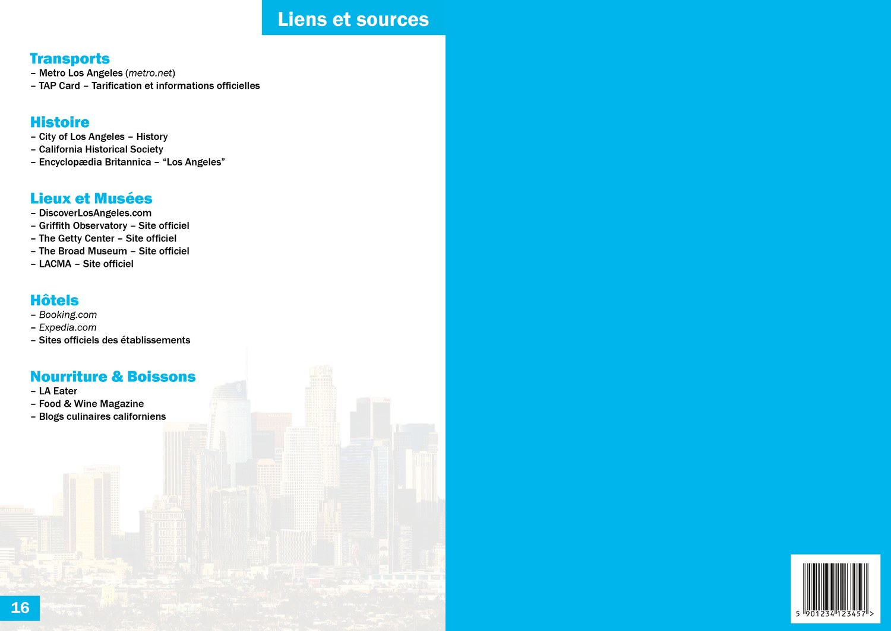
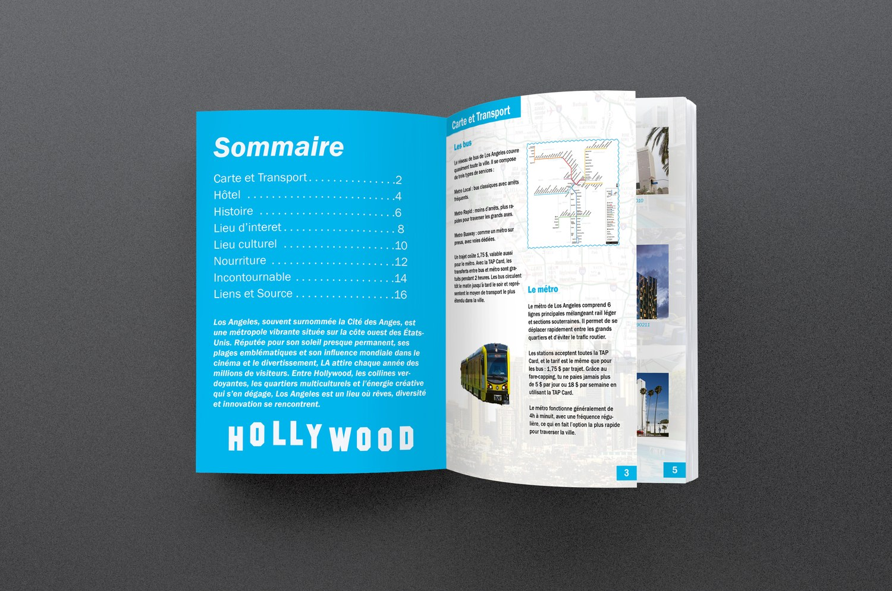
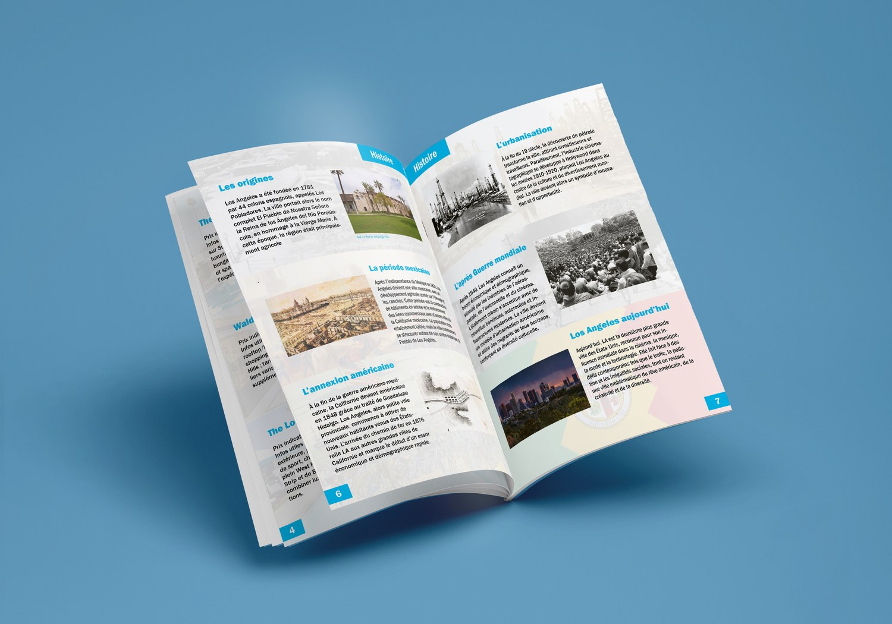
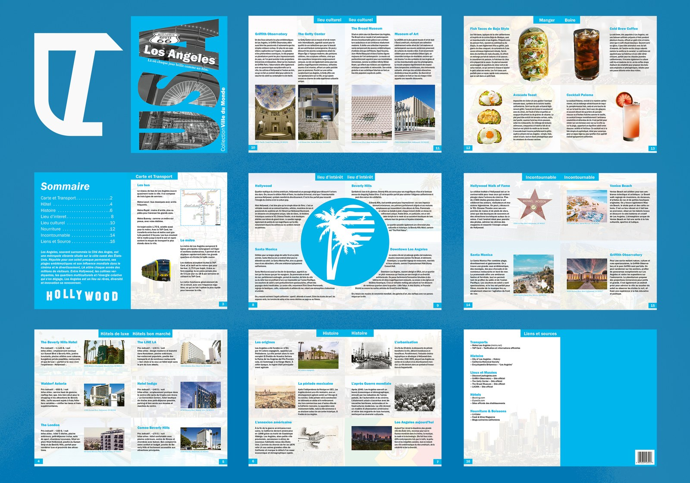

11 Édition, projet scolaire, module ICT 274, mars 2026
Los Angeles
Mon premier livre.
Un guide touristique de seize pages, imprimé, avec ses transports, ses hôtels, son histoire, ses lieux d'intérêt et culturels, ses adresses pour manger et ses incontournables. Toute la classe travaillait sur la collection « Ville du Monde », chacun avec sa ville. J'ai pris Los Angeles, parce que c'est une ville où j'ai toujours voulu aller.
Sept heures de travail, seul. C'était la première fois que je devais tenir une mise en page cohérente sur autant de pages, avec une vraie hiérarchie de contenu et pas un visuel unique.

La couverture
01 Le bleu
Trouvé ici, gardé depuis.
Le bleu que vous voyez partout sur ce portfolio vient de ce projet. Je l'ai trouvé totalement par hasard, en cherchant simplement une couleur pour le magazine.
Juste après, j'ai voulu me lancer sous mon propre nom, et il me fallait une direction artistique. J'ai repris ce bleu. C'est devenu la couleur de LT Design, et elle n'a pas bougé depuis.
02 La grille
Un bandeau bleu, une rubrique.
La grille était posée dès le départ : chaque double-page porte en haut son bandeau bleu avec le nom de la rubrique, et son numéro de page en bas dans un carré de la même couleur. Huit rubriques, seize pages, et le repère ne change jamais. C'est ce qui tient le livre debout.







Le sommaire, et son HOLLYWOOD

Le livre imprimé
03 Le résultat
Le point de départ.
Le guide a été imprimé et relié. Ce que j'en garde, c'est la couleur, et le fait que c'est le projet qui a lancé tout le reste.
Ce qui me gêne quand je le revois : certaines photos, et le positionnement des textes, qui n'est pas toujours propre. Sur seize pages, tenir chaque bloc au millimètre était au-dessus de mon niveau à l'époque. C'est exactement ce que j'ai travaillé ensuite.
Le contenu rédactionnel a été rassemblé à partir de sources en ligne, listées en dernière page du guide.

Les seize pages